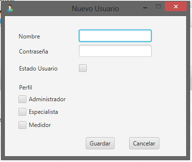

Al solicitar la creación de un nuevo usuario, se desplegará la siguiente pantalla:

Complete los datos correspondientes a nombre de usuario y contraseña, y a continuación tilde los perfiles que el nuevo usuario tendrá, si no recuerda qué es un perfil o los permisos asociados a cada uno, puede verificarlos aquí.
Además, deberá indicar si el usuario se encuentra HABILITADO (tildando la opción) o NO HABILITADO (en caso contrario), El único modo de que un usuario pueda loguearse en el sistema, es que se encuentre habilitado, de otra forma, sus datos permanecerán almacenados, pero no podrá ingresar al SGA.
Una vez completado el nombre, la contraseña e indicado el o los perfiles asociados al nuevo usuario, deberá confirmar la creación haciendo click en GUARDAR.
Si selecciona CANCELAR, los datos se perderán y el nuevo usuario no será creado.
Si al guardar, se le notifica que el nombre de usuario ya está en uso, deberá modificarlo para poder continuar.

Una vez que el nuevo usuario haya sido guardado, podrá ver sus datos y estado en la lista de usuarios de la pantalla de usuarios.
A continuación:
Editando los perfiles de un usuario existente
Created with the Personal Edition of HelpNDoc: Free CHM Help documentation generator